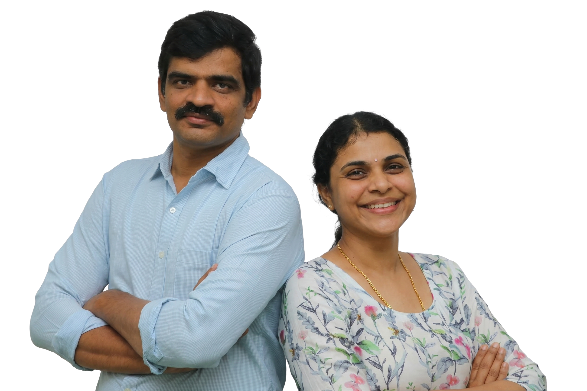
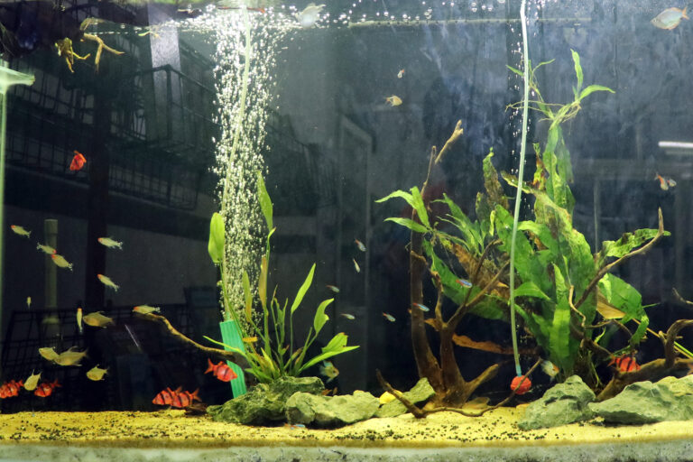
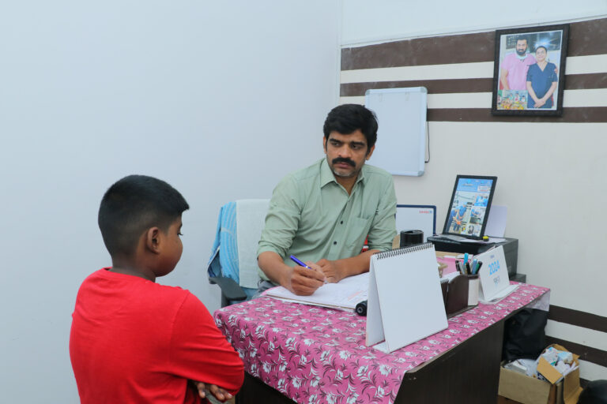
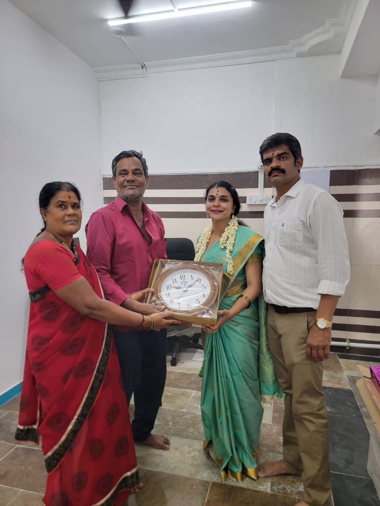

Hearing, ear, and balance care
Audiology-linked support, vertigo assessment, ear procedures, and practical recovery guidance.
Calling time is 10 AM to 10 PM. Book appointments quickly through phone or WhatsApp.
Book Appointment on WhatsApp
CHESS Surgical Center combines experienced ENT specialists, minimally invasive procedures, vertigo expertise, hearing support, and personalized treatment plans for every stage of care.

Focused ENT care in Pallavaram with consultations, treatment planning, procedures, and recovery follow-up under one clinic team.
CHESS Surgical Center is a specialist ENT center in Pallavaram, Chennai focused on sinus care, hearing support, vertigo management, throat disorders, and advanced skull base procedures with close clinical attention.
Patients come to CHESS for clear explanations, practical treatment planning, and follow-up that stays grounded in daily life, recovery goals, and long-term comfort.
Audiology-linked support, vertigo assessment, ear procedures, and practical recovery guidance.
Focused evaluation for allergy, sinus blockage, nasal obstruction, and day-to-day breathing comfort.
FESS, microscopic ear surgery, thyroid and salivary care, and selected skull base interventions.
From first consultation to procedure planning and follow-up, the CHESS approach is built around clarity, precision, and support that patients can actually act on.
From the first consultation to follow-up care, CHESS focuses on practical ENT treatment that is medically sound, calm, and easier for patients to understand.

Symptoms, duration, previous treatment, daily impact, and patient concerns are all reviewed before decisions are made.

ENT-focused examination and procedure planning are used to clarify what is happening and what the next step should be.
Treatment plans are adapted to the condition, lifestyle, recovery expectations, and the level of support a patient needs.

Progress review, symptom tracking, and recovery guidance help patients move forward with more clarity and confidence.
CHESS covers everyday ENT consultations through to skull base surgery, voice therapy, allergy services, hearing aid support, pharmacy, and lab access.
Routine ENT consultation, symptom evaluation, and tailored treatment plans for adults and children.
Read MoreSpecialized assessment and management for dizziness, vertigo, imbalance, and posture-linked vestibular concerns.
Read MoreVoice and speech support for rehabilitation, communication recovery, and long-term vocal health planning.
Read MoreENT-linked allergy care for recurring triggers, chronic irritation, sinus issues, and upper airway symptoms.
Read MoreIntegrated hearing support and audiology-linked services for easier assessment, fitting, and follow-up.
Read MoreSkull base surgery, endoscopic CSF leak care, FESS, microscopic ear surgery, thyroidectomy, and more.
Read MoreCHESS highlights practical video guidance for patients. This section makes that educational content easier to access directly from the homepage.
Step-by-step patient guidance from CHESS for using Nasowash correctly and comfortably at home.
Patient-friendly guidance from CHESS explaining what throat foreign bodies are, the symptoms to watch for, why they should not be ignored, and when urgent ENT evaluation is needed for safe removal.
A quick CHESS education video showing proper nasal spray technique so treatment reaches the right area effectively.
Real patient feedback reflecting trust, careful explanation, and compassionate ENT care.
Very expert doctors. Dr. Lakshmi is very compassionate and patiently listens and explains the treatment process.
I was referred as a vertigo patient and examined thoroughly. The doctor focused on posture, treatment, and exercise in a way that helped me walk steadily again.
Very kind and very friendly with a soft nature. I started seeing improvement within five days of treatment.
Consultations feel attentive and unhurried, with careful listening followed by clear explanation of the treatment plan.
For vertigo and balance concerns, patients value that recovery guidance extends beyond medicine and includes posture and exercise support.